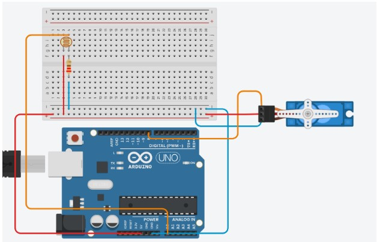
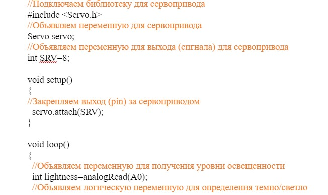
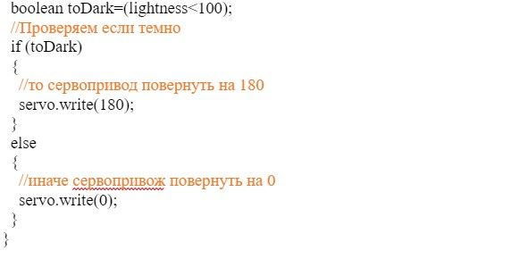
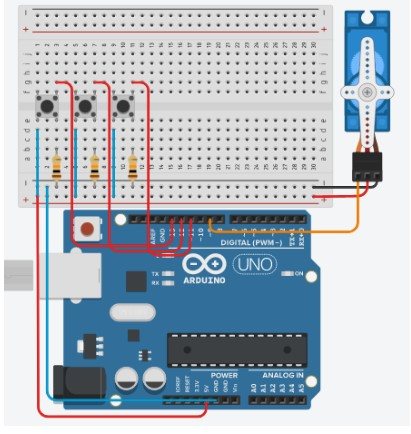
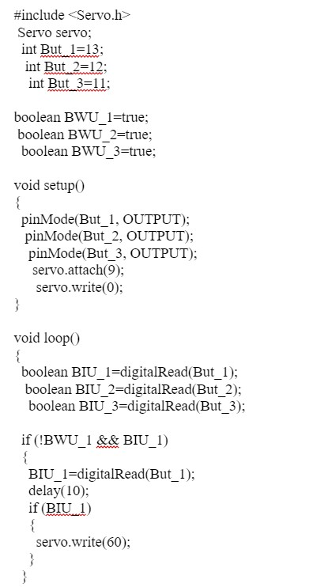
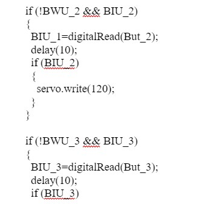
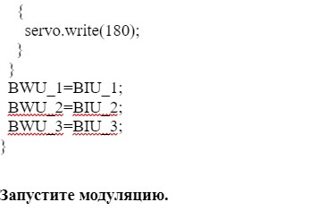

Практическая работа
«Работа сервопривода совместно с датчиком света»
Список деталей для эксперимента:
- 1 плата ArduinoUno
- 1 макертная плата
- 1 резистор на 220 Ом
- 1 фоторезистор
- 1 сервопривод
- 8 проводов «папа-папа»
Схема на макете

Скетч:


Запустите модуляцию
«2. Управление сервоприводом с помощью кнопок»
- 1 плата ArduinoUno
- 1 беспаечная макетная плата
- 1 сервопривод
- 1 датчик температуры
- 8 проводов «папа-папа»
Схема на макете

Скетч:


